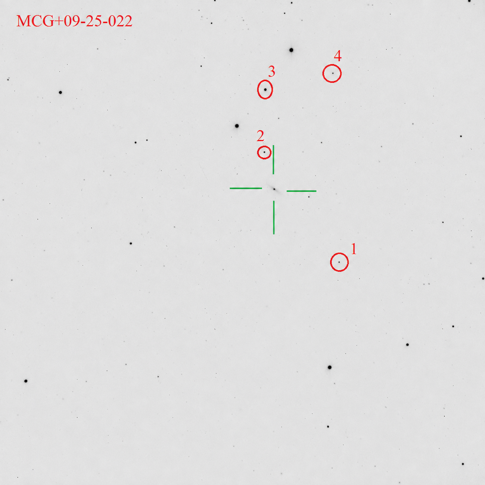

Mrk 845
MCG+09-25-022 · 2MIG 2067
AGN is labelled “AGN”; comparison stars are labelled
1, 2, 3… to match the table. Click a marker for details.
Three consecutive nights in May 2025; ≈4 h per night; 112–125 frames retained after quality control.
Reference-star use.
Primary statistical references: star 3 on 2025 May 20;
star 4 on May 21 and 22.
Validation.
Four local APASS DR9 comparison stars were used.
Leave-one-out stability checks were applied.
A common 9-pixel aperture was used on all three nights.
Catalogue note.
APASS DR9 lists σV = 0.000 mag for star 4.
This is not interpreted as a physically zero photometric
uncertainty and is therefore shown here as unavailable.
Static finding chart

Comparison-star sequence
| ID | RA (deg) | Dec (deg) | V | σV | Catalogue | |
|---|---|---|---|---|---|---|
| 1 | 226.873709 | 51.488488 | 16.418 | 0.047 | APASS DR9 | |
| 2 | 226.970757 | 51.447272 | 16.118 | 0.065 | APASS DR9 | |
| 3 | 227.025070 | 51.447829 | 13.649 | 0.060 | APASS DR9 | |
| 4 | 227.039360 | 51.484968 | 16.621 | — | APASS DR9 |
Observing log
| Night | Exposure | Duration | Frames |
|---|---|---|---|
| 2025-05-20 | 60 s | 4.25 h | 125 used / ≈234 acquired |
| 2025-05-21 | 60 s | 3.97 h | 116 used / ≈238 acquired |
| 2025-05-22 | 70 s | 4.04 h | 112 used / ≈207 acquired |
Source:
Izviekova et al. (2026, manuscript) —
The 2MIG isolated AGNs – 5. Hot-dust reverberation and
spectroscopic constraints on BLR–dust scales in IC 5287 and Mrk 845
Public article link will be added after release.
Public article link will be added after release.